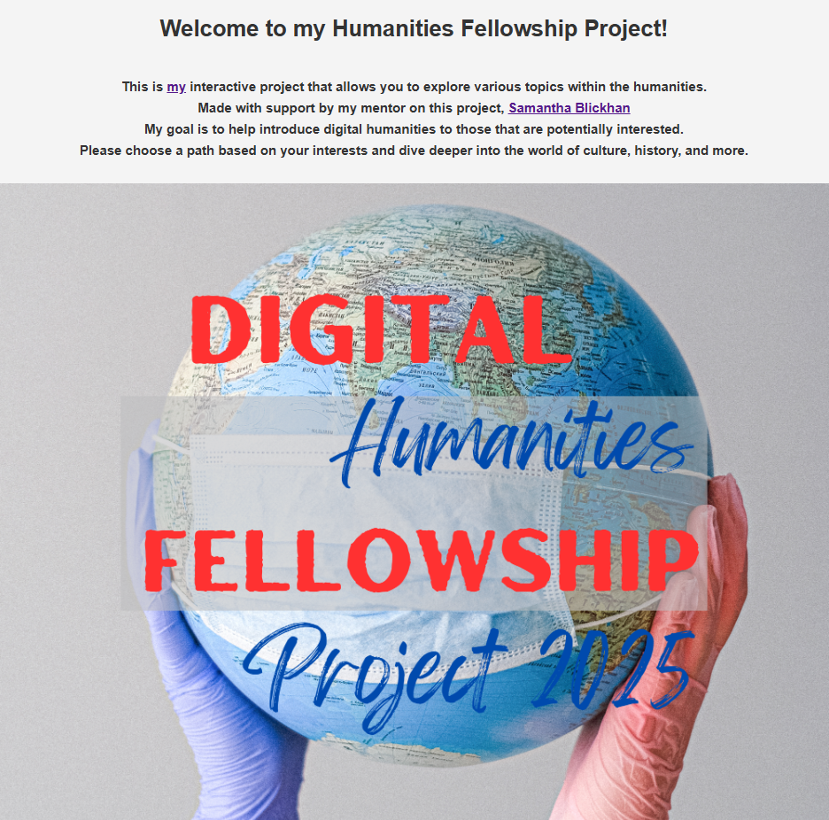
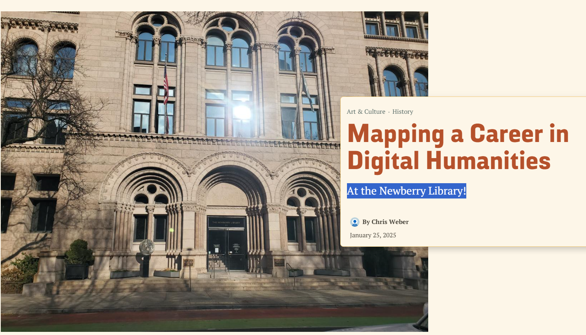

Welcome to my Humanities Fellowship Project!
This is my interactive project that allows you to explore various topics within the humanities.
Made with support by my mentor on this project, Samantha Blickhan
My goal is to help introduce digital humanities to those that are potentially interested.
Please choose a path based on your interests and dive deeper into the world of culture, history, and more.

Created using Canva
Frequently Asked Questions About Digital Humanities
What is the defintion of digital humanities?
Digital Humanities is an interdisciplinary field, combining humanities with technology, that uses digital tools to study and share subjects like literature, history, and culture.
It includes text analysis, data visualization, and interactive storytelling to make research more accessible, engaging, and innovative.
Why is Digital Humanities important?
Digital Humanities helps us analyze vast amounts of information, preserve cultural heritage, and make history and literature more interactive and accessible.
It allows scholars and the public to engage with humanities subjects in new and exciting ways.
What skills are useful in Digital Humanities?
Critical thinking & research (history, literature, philosophy)
Digital tools & coding (data visualization, web development, Python, JavaScript)
Storytelling & design (interactive media, game development, user experience).
Can I work in Digital Humanities without knowing how to code?
Yes! While coding can be helpful, many DH projects focus on storytelling, design, and research.
Tools like WordHoard, Omeka, and ArcGIS allow users to analyze texts, create digital exhibits, and visualize data without advanced programming skills.
How does Digital Humanities connect to careers?
DH skills are valuable in careers such as:
Technology & UX Design - Creating interactive content and digital experiences
Education & Museums - Developing digital exhibits and educational tools
Media & Journalism - Using data-driven storytelling to engage audiences
Archival & Library Science - Preserving and organizing digital collections
What are some examples of Digital Humanities projects?
Google Arts & Culture - Virtual museum exhibits and historical reconstructions
Mapping the Republic of Letters - A project visualizing historical correspondence networks
This digital storytelling project - An interactive way to explore different career paths

Mapping a Career in Digital Humanities at the Newberry Library!
